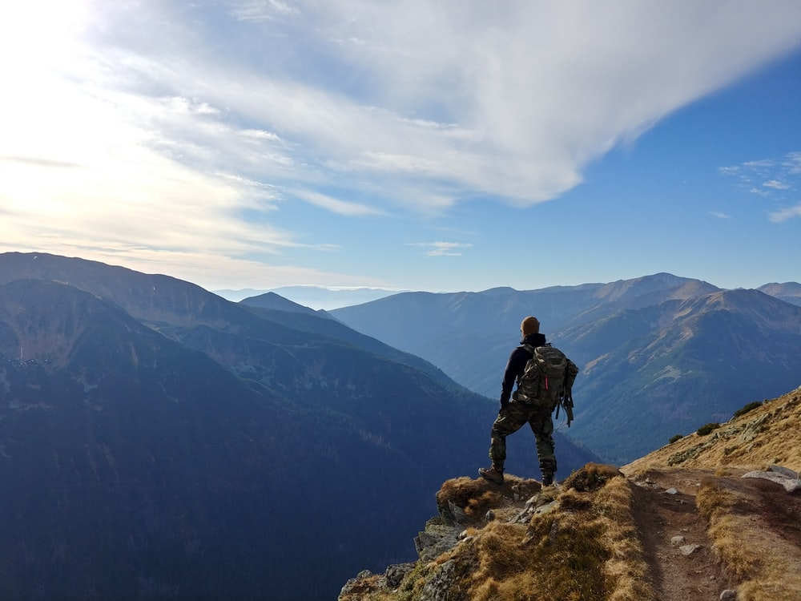

|
Every Sunset is opprtunity to reset :) |
Photo Gallery
June Sunset:
Sunday Evening:
|
|
Family is a gift that lasts Forever. |
Holiday Adventures:
|

|
Explore the Unexplore. |
Festival Runaway:
|
|
The greatness of the culture can be found in its festivals. |